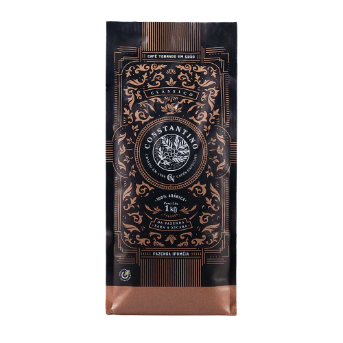
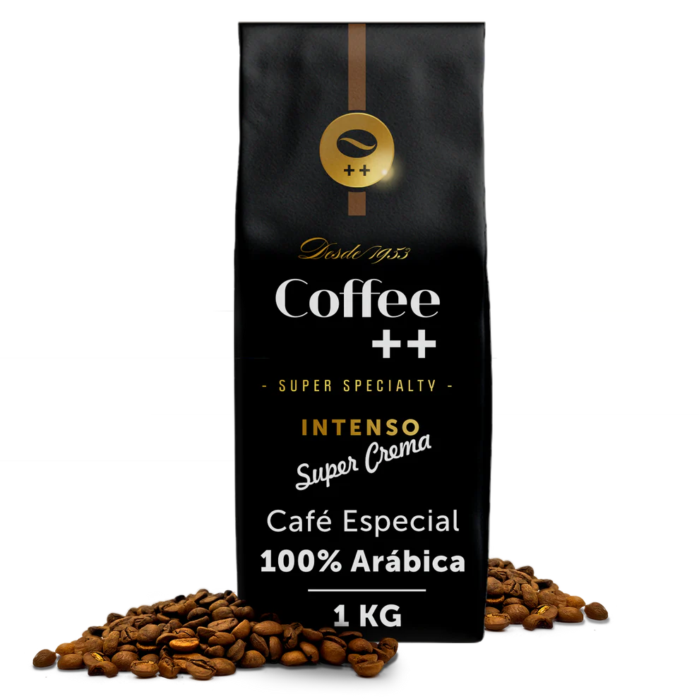
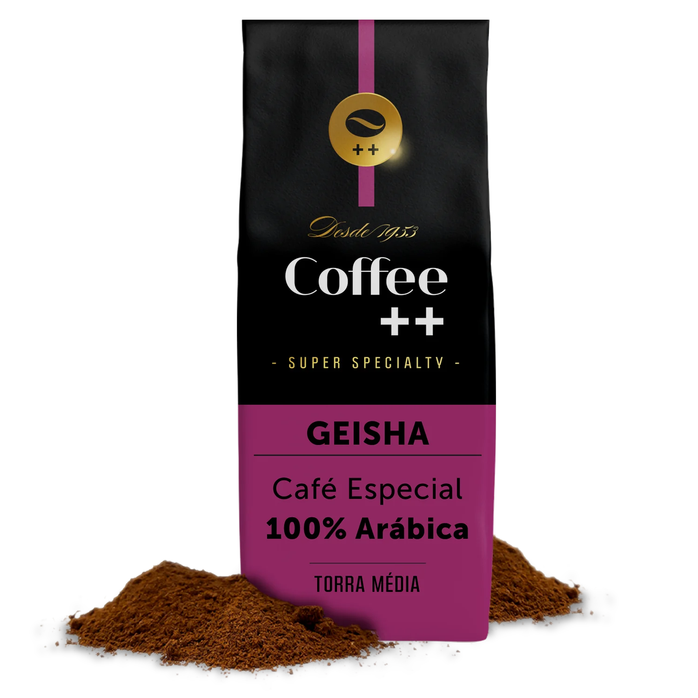
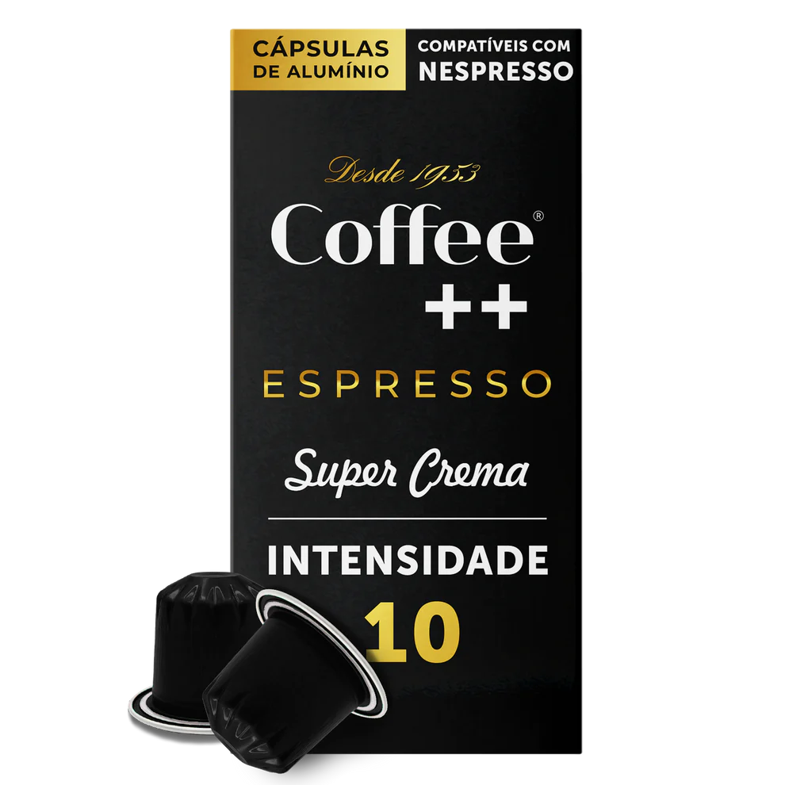

Cafes Constantino
No paladar, a doçura natural dos grãos contrasta com a acidez agradável de frutas vermelhas maduras e sabor caramelizado.
Café Super Crema Grãos
Café é afeto e o convite ideal para uma boa conversa. O que acha de oferecer xícaras do original espresso no preparo de um café moído na hora com grãos 100% arábica e intensidade de chocolate.
Café Geisha Moído
100% ARÁBICA | Esse é o “Melhor Café do Mundo”, segundo o Cup of Excellence, de 2018.
Café Super Crema Espresso
para usar este produto, prepare uma máquina especial para cápsulas com água quente. encaixe uma cápsula dentro, resistindo-a para um lado. em seguida, feche a máquina e pressione o botão de início. quando o líquido sair da máquina, a bebida estará pronta para ser servida.